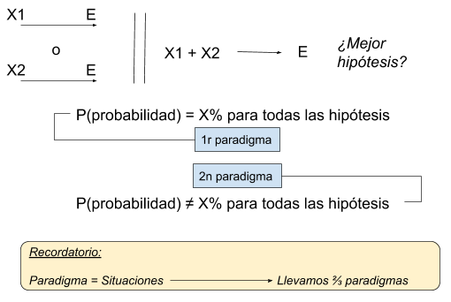

Dos de las obras maestras arquitectónicas de Barcelona son completamente
opuestas. La Sagrada Familia, diseñada por Antoni Gaudí, se encuentra a pocos
kilómetros del pabellón alemán, construido por Mies van der Rohe. La iglesia de
Gaudí es extravagante y compleja, mientras que el pabellón de Mies es minimalista
y sencillo.
Mies, el apóstol de la arquitectura minimalista, usó el lema "menos
es más" para expresar lo que buscaba. Gaudí nunca dijo "más es más", pero sus
edificios sugieren que eso es lo que tenía en mente.
Sin embargo, entre estos dos extremos hay un vasto espacio de posibilidades. Diferentes artistas han tenido distintos objetivos pues su trabajo no es tratar de descubrir el grado de complejidad único y correcto que deberían tener todas las obras de arte. En el arte, no existe tal ideal atemporal.
La
ciencia es diferente, al menos según muchos científicos. Albert Einstein habló
por muchos cuando dijo que "apenas se puede negar que el objetivo supremo de
toda teoría es hacer que los elementos básicos irreducibles sean lo más simples
sin tener que renunciar a la representación adecuada de un solo dato de
experiencia".
La búsqueda de teorías simples, entonces, es un requisito de la
comunidad científica. Cuando las teorías se vuelven demasiado complejas, los
científicos buscan la Navaja de Ockham (el principio de la parsimonia) para
recortar. Este principio dice que una teoría que postula menos entidades,
procesos o causas es mejor que una teoría que postula más, siempre y cuando la
teoría más simple sea compatible con lo que observamos. Pero, ¿qué significa
"mejor"?
Las reglas del razonamiento
Uno de los estandartes de la Navaja de Ockham se puede encontrar en Isaac Newton, el cual establece cuatro "reglas del razonamiento". Siendo las dos primeras las siguientes:
- No se deben admitir más causas naturales de las suficientes para
explicar el fenómeno.
Como dicen los filósofos: la naturaleza no hace nada en vano, y más causas son en vano cuando menor cantidad son suficientes.
Esto es debido a que la naturaleza es simple y no se permite el lujo de causas superfluas. - Por lo tanto, las causas asignadas a los efectos naturales de la misma deben ser, en la medida de lo posible, las mismas. El claro ejemplo de esta regla puede ser la causa del fenómeno de respiración.
Newton no dice mucho para justificar esas reglas, pero en "Reglas para metodizar" sí que se explaya ligeramente siendo el siguiente parágrafo una de ellas:
Se deben eligir aquellas construcciones que sin esfuerzo reducen los elementos a su máxima simplicidad. La razón para ello es que la verdad siempre se puede encontrar en la simplicidad, y no en la multiplicidad y confusión de los elementos. Es la perfección de las obras de Dios que todas se realicen con la mayor simplicidad. él es el Dios del orden y no de la confusión. Y por lo tanto, aquellos que entienden la estructura del mundo deben esforzarse por reducir su conocimiento a la máxima simplicidad posible.
Newton cree que priorizar aquellas teorías más simples tiene sentido, ya sea para interpretar la Biblia o descubrir las leyes de la física.
La simplicidad como método para evaluar el mundo
En el siglo XX, filósofos, estadísticos y científicos progresaron en la comprensión de por qué la simplicidad de una teoría es relevante para evaluar cómo es el mundo. Sus justificaciones del uso de la Navaja de Ockham se encuentran explicados en tres "paradigmas de parsimonia", situaciones dentro de los cuales se puede justificar el uso de dicha navaja.
Primer y segundo paradigma
El primero de ellos se ejemplifica con el consejo dado a los estudiantes de medicina en el que deben evitar perseguir cebras. Si los síntomas de un paciente se pueden explicar o bien por una hipótesis X donde tiene una enfermedad común, o bien por una hipótesis Y donde tiene una enfermedad rara, se debe priorizar X sobre Y. Se entiende que X es más parsimonioso y que, por tanto, tiene mayor probabilidad de ser cierto.
Otra de las situaciones donde las teorías más simples tienen una mayor probabilidad de ser ciertas es cuando se hace uso de la "navaja del silencio". En esta variante de la Navaja de Ockham nos dice que si hay evidencia de que X1 es causa de E(enfermedad) y ninguna evidencia de que X2 es causa de E, entonces X1 es una mejor explicación de E que X2.
Durante el siglo XIX, John Stuart Mill dijo que no debemos creer nada de lo que no hay evidencia. Debemos evitar suponer que un hombre que fue asesinado al caer por un precipicio, éste también ha tomado veneno.
El problema cambia si
consideramos dos hipótesis conjuntivas.
¿Cuál es la mejor explicación de que
X1->E y no X2->E o X1+X2->E?
La navaja del silencio no nos proporciona ninguna
orientación en cuanto a esta pregunta y por ello aparece la "navaja de la
negación".
Esta navaja nos dice que debemos priorizar la primera opción pues, como ya dijo Newton en las reglas del razonamiento, postular una sola causa común es más parsimonioso que postular una gran cantidad de causas independiente y separadas aunque sumatorias.
Mientras que en el primer paradigma de parsimonia tenemos que las dos hipótesis (una simple y una compleja) confieren la misma probabilidad, podemos tener diferentes problemáticas en las que las dos hipótesis confieren diferentes probabilidades. Este hecho nos introduce el segundo paradigma de parsimonia.

En muchos casos, la evidencia favorece la teoría más simple sobre su competidor más complejo. Por ejemplo, suponemos que todas las luces del vecindario se apagan al mismo tiempo. Así pues, se consideran las dos hipótesis:
- Hipótesis 1 (H1): algo le sucedió a la planta de energía que influyó en todas las luces.
- Hipótesis 2 (H2): algo le sucedió a cada uno de las bombillas que influyó en todas las luces.
Postular una sola causa común es más parsimonioso que postular una gran cantidad de causas independientes y separadas. El oscurecimiento simultáneo de todas esas luces es más probable si H1 es verdadero que si H2 fuera cierto.
Un ejemplo biológico en el que se prefieren las causas comunes a las causas separadas se puede encontrar en la hipótesis de Charles Darwin donde toda la vida actual se remonta a uno o algunos progenitores originales. Los biólogos modernos están en la misma página cuando señalan que la casi universalidad del código genético favorece fuertemente la hipótesis de la ascendencia común sobre la hipótesis de antepasados múltiples.
Tercer paradigma
Según el tercer paradigma de parsimonia, la parsimonia (es decir, la Navaja de Ockham) es relevante para estimar con qué precisión un modelo predecirá nuevas observaciones. Hirotugu Akaike presentó un teorema sorprendente que demostró esta relevancia. Este teorema, denominado "teoría de selección de modelo" es la base de un criterio de evaluación que se denominó AIC (Criterio de información de Akaike). AIC dice que la capacidad de un modelo para predecir nuevos datos se puede estimar al ver qué tan bien se ajustan a los datos antiguos y al ver cuán simple es.
Por ejemplo, te encuentras conduciendo por un camino rural con dos enormes campos de maíz, uno a cada lado del camino. Detienes el coche y escoges una muestra de 100 plantas de maíz de cada campo y obtienes un promedio de 130 centímetros en la muestra del campo 1 y un promedio de 140 en la muestra del campo 2. Como te encuentras al final del ciclo de crecimiento de la temporada de maíz, asumes que las alturas promedio de los dos campos no variaran en los próximos días. Así pues, te comprometes venir mañana y volver a escoger una muestra de 100 plantas de maíz de cada campo. ¿Cuál de las siguientes dos predicciones crees que será más precisa?
- Predicción A: las 100 plantas que muestre mañana de la primera población tendrán un promedio de 130 centímetros y las 100 plantas que muestre mañana de la segunda población tendrán un promedio de 140 centímetros.
- Predicción B: cada una de las dos muestras tendrán un promedio de 135 centímetros.
El teorema de Akaike nos dice que este problema se puede resolver considerando los siguientes dos modelos sobre altura promedio de las dos poblaciones:
- DIFF: en este modelo la altura promedio en la primera población (h1) es diferente, o no, a la de la segunda población (h2).
- NULL: en este modelo la altura promedio en la primera población y en la segunda es la misma (h).
En ninguno de los dos modelos nos dice cuáles son los valores de h1, h2, y h; estos parámetros son los denominados "ajustables". El modelo NULL tiene ese nombre porque dice que las dos poblaciones no difieren en sus alturas promedios. El modelo DIFF es un poco engañoso ya que el modelo no dice que las dos poblaciones deban diferir sí o sí en sus alturas promedios, sino que DIFF permite esa posibilidad, pero también permite que las dos poblaciones tengan la misma altura.
¿Qué predicen DIFF y NULL sobre los datos que extraerá de los dos campos mañana? Los modelos por si sólo no proporcionan valores, sin embargo se puede ajustar cada modelo a sus datos anteriores estimando los valores de los parámetros ajustables (h1, h2, y h). El resultado son los siguientes dos modelos ya ajustados (fitted:f):
- f(DIFF): h1 = 130 centímetros y h2 = 140 centímetros.
- f(NULL): h = 135 centímetros.
La pregunta de qué modelo predecirá con mayor precisión los nuevos datos se interpreta como: ¿Qué modelo, una vez se han ajustado a los datos antiguos, predecirá con mayor precisión los nuevos datos que aún no se tienen?
Puedes pensar que DIFF tiene que ser cierto y que NULL tiene que ser falso pues ¿cuáles son las posibilidades de que dos grandes poblaciones de plantas de maíz tengan exactamente la misma altura promedio? Si la pregunta fuese que modelo es cierto y cuál es falso ya habríamos terminado, pero esa no es la pregunta pues lo que deseamos es evaluar los dos modelos por su precisión predictiva.
Uno de los hechos sorprendentes sobre los modelos NULL y DIFF es que un modelo que se sabe que es falso a veces hará predicciones más precisas que un modelo que se sabe que es verdadero. NULL, pese a ser falso, puede que se acerque más a lo cierto. Si esto fuera así, sería mejor usar NULL para predecir nuevos datos en lugar de utilizar DIFF. Después de todo, los datos anterior con los que ajustamos los modelos puede que no sean representativos. De tal forma que NULL nos mantiene rectos, mientras que DIFF nos invita a desviarnos.
Como ya hemos ido comentando al principio del artículo, es una cuestión de gusto en cuanto la importancia de la simplicidad y la complejidad en el arte. Pero la simplicidad, en ciencia, no es cuestión de gustos.
El Criterio de Información de Akaike que hemos introducido antes, evalúa NULL y DIFF teniendo en cuenta dos hechos: f(DIFF) se ajusta mejor a los datos antiguos que f(NULL), pese a que DIFF es más complejo que NULL. Aquí la complejidad de un modelo es la cantidad de parámetros ajustables que contiene el modelo. Como mencioné, AIC se basa en el teorema de Akaike, que puede describirse informalmente de la siguiente manera:
Una estimación imparcial de la precisión predictiva de un modelo (M) estable que: M = (qué tan bien se ajusta f(M) a los datos antiguos) – (el número de parámetros ajustables que contiene el modelo M).
El resultado matemático de esta fórmula, por lo tanto, puede establecerse que la parsimonia es relevante para estimar la precisión predictiva.
El teorema de Akaike
El teorema
de Akaike, como su propio nombre indica, es un teorema lo que significa que éste
deriva de suposiciones. Existen
La navaja de Ockham como logos
Gaudí y Mies nos recuerdan que no hay disputas de gustos a la hora de evaluar el valor de la simplicidad y la complejidad en las obras de arte. Einstein y Newton nos dicen que la ciencia es diferente. Akaike nos proporciona algunas razones por las cuales esto es así. El resultado es que hay tres paradigmas de parsimonia que explican cómo la simplicidad de una teoría puede ser relevante para decir cómo es el mundo.
- Paradigma 1: a veces las teorías más simples tienen mayores probabilidades.
- Paradigma 2: a veces las teorías más simples están mejor respaldadas por las observaciones.
- Paradigma 3: a veces la simplicidad de un modelo es relevante para estimar su precisión predictiva.
Estos tres paradigmas tienen algo importante en común. Si un problema encaja en alguno de los tres paradigmas, ésto depende de suposiciones sobre el problema. Estas suposiciones pueden ser ciertas para algunos problemas, pero falsas para otros. Aunque la parsimonia es relevante para formar juicios sobre cómo es el mundo, al final no existe una justificación incondicional y sin presunciones para la Navaja de Ockham.
No es ningún dispararte o problema que no haya una justificación incondicional.
No puede haberlo puesto que no siempre la explicación más simple es la más cierta.
Por ejemplo, la ley de la gravedad explica los movimientos de la luna, pero es mucho
más fácil pensar que dicho cuerpo celeste siempre se mueve en círculos perfectos a
una velocidad constante. Simple, pero falso.
La navaja de Okcham sólo nos proporciona una guía provisional puesto que no es
un método de confirmación, únicamente una máxima que nos dice no gastar
tiempo en entidades que no nos ayudan.
¿Es más simple pensar que el universo es más grande de lo que parece, o más
pequeño pero con cinco dimensiones? El primero puede implicar más entidades (cuerpos
celestes) pero el segundo parece ser menos parsimonioso.
O dejar la verdad a un lado y creer que la luz son partículas o incluso ondas.
Matar moscas a cañonazos
La aplicación inconsciente de la navaja de Ockham se puede observar perfectamente
en padres que intentan que sus hijos no vayan "demasiado lejos" cuando se
encuentran trabajando en deberes de la escuela.
Los niños intentan comprender aquellos conceptos complicados como si tuvieran una
escopeta, momento en el que los padres intervienen para recordarles; "tranquilízate
un momento que esto no es tan complicado como intentas hacerlo ver, vamos paso a paso".
Dichos padres no son concientes de la existencia de la navaja de Ockham, pero es exactamente
lo que están haciendo.
¿Matar moscas a cañonazos es una mala forma de afrontar un problema? No, así es exactamente como la ciencia en nuestros tiempos es usada. No es la forma más inteligente, pero nos puede dar resultado cuando ningún otro método funciona.
La navaja de Ockham es un intento para mantener a raya el uso de dicha escopeta.
Aunque los cañonazos no mermen el progreso científico, no promueve el uso efectivo de
la inteligencia que la situación requiere.
La navaja de Ockham no puede ser justificada, pero tampoco descartada.
Toda hiper-simplificación debería ser evitada en el terreno de la ciencia y filosofía, excepto como método temporal que nos permita empezar a trabajar o aplicar unos resultados finales. La simplicidad, como deseo práctico y estético, se vuelve peligrosa si es promovida como ley universal, especialmente en campos de conocimiento. Esto puede inducir a la ignorancia y, lo que es peor, el rechazo al aprendizaje.